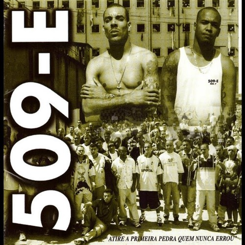

Vocalista: Mano Brown (Racionais MC's)
Lançamento: 2002
Motivo: Uma reflexão profunda sobre a dor, a traição e a fé na periferia. Inspirada em passagens bíblicas e na realidade cruel das ruas.
Vocalista: Mano Brown (Racionais MC's)
Lançamento: 2002
Motivo: Celebra a sobrevivência e a ascensão do jovem negro, apesar de todas as adversidades e do sistema que tenta oprimi-lo.
Vocalista: Mano Brown e Edi Rock
Lançamento: 2002
Motivo: Um hino sobre a identidade negra no Brasil, narrando o drama de ser negro na periferia e o sucesso conquistado através do rap.
Vocalista: Mano Brown
Lançamento: 1993
Motivo: Narra a história de um ex-detento tentando se reintegrar à sociedade, enfrentando o preconceito e a vigilância constante.
Vocalista: Mano Brown
Lançamento: 2002
Motivo: Uma crítica social ácida sobre como o sistema empurra o jovem para o crime (Artigo 157 - Roubo) e a glamourização perigosa dessa vida.

Vocalista: Dexter (509-E)
Lançamento: 2000
Motivo: Escrita dentro do Carandiru, a música fala sobre redenção, o julgamento da sociedade e a busca por um caminho melhor mesmo no inferno.

Vocalista: Sabotage
Lançamento: 2000
Motivo: "Um bom lugar se constrói com humildade". Sabotage traz a visão de esperança e respeito necessária para sobreviver na favela.
Vocalista: Sabotage
Lançamento: 2000
Motivo: Uma homenagem nostálgica à sua origem na Favela do Canão, relembrando os amigos e as raízes que o formaram como homem e artista.
Vocalista: Sabotage
Lançamento: 2000
Motivo: O manifesto definitivo de Sabotage. Define o rap não apenas como música, mas como um compromisso sério com a verdade e a comunidade.